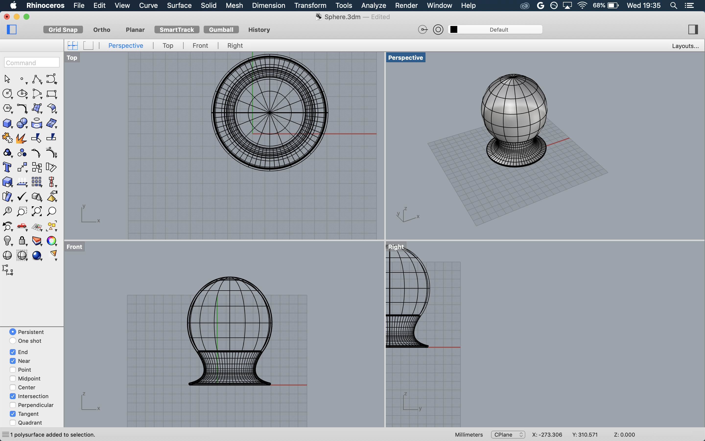

Problem Statement
Final project week! The assignment was to implement the project plan from last week and create something which combined multiple fabrication techniques taught throughout the quarter. The project statement was the following:
Design and digitally fabricate an object of your choosing using at least four of the techniques you have learned in class. It can be any kind of object with any kind of intended audience, but it must follow the plan you presented in proposal week.
Concept Review
My chosen final project was to construct an octopus with a 3D printed head and a mechanical iris body that would sprout legs when the iris was opened. Time permitting, I wanted to add a light feature to the base so that the head would light up when the iris was open. The project used the following techniques learned in this class:
- Laser cutting (octopus body/mechanical iris)
- CAD (designing the octopus head in Rhino and mechanical iris in OnShape)
- 3D printing (octopus head)
- Moving/interlocking/stock parts (mechanical iris)
I included the following brainstorming sketches in my project proposal. They are copied here to show the first parts of my process for this project.


Parts and Files
Here is the final Bill of Materials for this project:
| Material | Quantity | Sourcing Notes |
|---|---|---|
| 6mm Plywood | 1 24x18" sheet | Already available in the makerspace I will be using |
| Filament (color TBD based on availability | Less than 1 roll | Already available in the makerspace I will be using |
| 7/8" 4-40 stainless steel pan head screws | 8 count (for top of iris) | Sourcing from Home Depot |
| 9/16" x 1/4" dowel pins | 8 count (for underside of iris) | Sourcing from Home Depot |
Here are the final source files for all parts of this project: Head (3dm) Body (OnShape)
The Digital Part

 SUCCESSES/FAILUReS?
good: i made the iris! it's beautiful and I designed it myself! also the light is wonderful
bad: no voronoi, it's a squid instead of an octopus
SUCCESSES/FAILUReS?
good: i made the iris! it's beautiful and I designed it myself! also the light is wonderful
bad: no voronoi, it's a squid instead of an octopus
Write technical documentation such that someone can reproduce your work (1pt) Does your technical implementation follow the best practices we learned in the class? Do you cover this in your presentation? Is your project execution well done, does it embody a high standard of design and finish? Did you drastically deviate from what you said you would do in your proposal? Do you cover this in your presentation?


The Fabrication Part